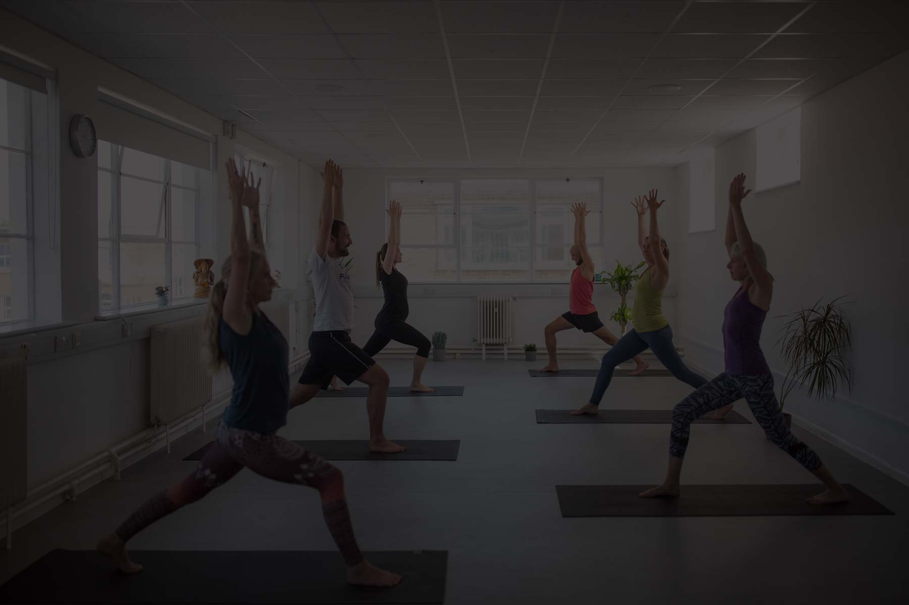

£50 per night
Clear nightly rate for trainee accommodation during Foundation Training weekends.
Foundation Training · Berkshire Yoga Training
200 hours across nine in-studio weekends from 12 February to 14 November 2027 in Berkshire and Reading, plus three self-study modules. Lead faculty: Raili Maripuu and Katia Major (co-founders). Meet them at the 2-hour Open Day on 7 November 2026, then apply for the 2027 cohort.
Overview
Practical details applicants need before they enquire. Venue postcodes are confirmed per cohort on the location page and in joining packs.
| Fact | Detail |
|---|---|
| Hours | 180 contact hours · 20 self-study hours |
| Provider | Thames Wellness Academy |
| Format | Nine weekend intensives in studio · three self-study modules |
| Typical day | Studio 09:30-17:00 each training day |
| Location | Berkshire and Reading (venue confirmed in your joining pack) |
| Accommodation | Available from £50 per night · Accommodation details |
| Accreditation | Yoga Pros Organisation Limited |
| Fees | Early Bird £2,925 · Standard £3,250 · Deposit and study fees can be paid in instalments |
| Deposit | 30% of the fee (Early Bird £877.50 · Standard £975) · Can be paid in instalments |
| Cohort window | Fri 12 Feb to Sun 14 Nov 2027 · See schedule |
| Lead faculty | Katia Major and Raili Maripuu (co-founders; guest teachers may join modules) |
| Next event | Open Day, Sat 7 Nov 2026, 12:00-2pm (2 hours) |
Stay
Overnight stays for course weekends from £50 per night. Useful if you are travelling into Berkshire and Reading for the intensives.
Clear nightly rate for trainee accommodation during Foundation Training weekends.
Arranged for Berkshire and Reading course weekends so travel between sessions stays simple.
Ask early with your weekend dates when you enquire or apply.
Gallery
A first look at the stay and nearby training context. More room photos will replace the placeholders as they are ready.

Fit
Honest entry points. If you are unsure, enquire and we will say so plainly.
Graduates leave able to:
Foundation Training continues toward 300 and 500-hour pathways. Browse CPD for specialist modules once you are certified.
Investment
Published fees for the 2027 Foundation 200 cohort. Early Bird is 10% below Standard when available. Deposit to secure your place: 30% of the fee (Early Bird £877.50 · Standard £975). Balance due before the course starts; instalment details confirmed in your offer letter.
| Fee type | Amount | Notes |
|---|---|---|
| Early Bird | £2,925 | 10% saving when available for this cohort |
| Standard | £3,250 | Full published fee |
| Early Bird deposit (30%) | £877.50 | To secure your place when Early Bird applies |
| Standard deposit (30%) | £975 | To secure your place on the Standard fee |
| Deposit instalments | Available | Deposit can be paid in instalments |
| Study fee instalments | Available | Course fees can be paid in instalments |
| Application fee | TBC | Ask if any fee applies before you pay |
Refund and withdrawal rules sit with Academy terms. Do not rely on informal promises. Email info@thameswellnessacademy.co.uk if you need payment plan clarity before applying.
Dates
Nine weekend intensives from February to November 2027 (no August block). All listed weekends are in studio, 09:30-17:00 each day. Self-study sits in a separate section below. Meet faculty first at the Open Day on Saturday 7 November 2026 (12:00-2pm).
| Weekend | Dates | Format | Hours |
|---|---|---|---|
| 1 | Fri 12 to Sun 14 Feb 2027 | In studio | 09:30-17:00 each day |
| 2 | Fri 19 to Sun 21 Mar 2027 | In studio | 09:30-17:00 each day |
| 3 | Fri 23 to Sun 25 Apr 2027 | In studio | 09:30-17:00 each day |
| 4 | Fri 21 to Sun 23 May 2027 | In studio | 09:30-17:00 each day |
| 5 | Fri 11 to Sun 13 Jun 2027 | In studio | 09:30-17:00 each day |
| 6 | Fri 9 to Sun 11 Jul 2027 | In studio | 09:30-17:00 each day |
| 7 | Fri 17 to Sun 19 Sep 2027 | In studio | 09:30-17:00 each day |
| 8 | Fri 15 to Sun 17 Oct 2027 | In studio | 09:30-17:00 each day |
| 9 | Fri 12 to Sun 14 Nov 2027 | In studio | 09:30-17:00 each day |
Studio contact time across these nine weekends forms the 180 contact hours. Exact venue addresses are confirmed in your joining pack. Attendance rules are set before enrolment.
Between weekends
Twenty self-study hours sit outside the studio schedule, organised as three modules. Topics, reading and deadlines are confirmed in your joining pack.
| Module | Topic | Hours | Notes |
|---|---|---|---|
| 1 | Confirmed in joining pack | Part of 20 hours | Self-directed study between intensives |
| 2 | Confirmed in joining pack | Part of 20 hours | Self-directed study between intensives |
| 3 | Confirmed in joining pack | Part of 20 hours | Self-directed study between intensives |
Together with the nine in-studio weekends, these three modules complete the 200-hour pathway (180 contact · 20 self-study).
Study map
Categories align with professional teacher-training expectations. Exact hour splits are confirmed at enrolment.
Sequencing, cueing, assists and mixed-level delivery.
Safe teaching language for joints, breath and load.
Context for professional conduct and student care.
Lesson planning, observation and classroom leadership.
Supervised teaching with faculty feedback.
Clear thresholds and catch-up expectations before you enrol.
Faculty
Named Academy faculty. Guest teachers may join specific modules.
Lead faculty. Clinical and studio practice in Reading; professional teaching standards and classroom craft.
View profile Co-founderLead faculty. Studio leadership and long-form teacher education; Open Day host with Katia.
View profile TeacherAcademy teacher supporting programme delivery.
View profile TeacherAcademy teacher supporting programme delivery.
View profileBe explicit before you pay a deposit. Final criteria are written into your enrolment pack.
Graduate stories live on the Academy testimonials page. We only publish quotes we can stand behind.
Meet the faculty
Saturday 7 November 2026, 12:00-2pm. Free 2-hour studio session for this 200-hour pathway. Full event details and registration live on the Open Day event page.
Register on the dedicated event page for this Foundation Open Day only.
Enrolment
Four clear steps. No third-party booking widgets on this pathway.
Questions
On-page answers with FAQ schema. Sitewide FAQ remains available for Academy-wide topics.
Most trainees join to teach. A strong personal-practice motive is welcome if you accept assessment and supervised teaching hours. Tell us your aim when you apply.
A regular asana practice and capacity to study anatomy, philosophy and methodology between modules. Exact prerequisites are confirmed on application.
Yes, Foundation Training is designed as a Yoga Alliance Professionals pathway. Credential wording matches the registration status for your cohort.
180 contact hours across nine in-studio weekends (09:30-17:00 each day), plus 20 self-study hours in three separate modules. See the schedule and self-study sections.
Many trainees do. The course runs as nine weekend intensives from February to November 2027, with homework between sessions. Plan recovery time after long modules.
Fees are Early Bird £2,925 and Standard £3,250. Deposit to secure your place: 30% of the fee (Early Bird £877.50 · Standard £975). Balance due before the course starts; instalment details and refunds are confirmed in your offer letter and Academy terms.
Attendance rules are set before enrolment. Catch-up or later-cohort options are decided with faculty case by case.
Attendance, practicum, written or reflective work, and faculty feedback. Full criteria are shared at enrolment.
On-site venues across Berkshire and Reading. Parking and rail notes are in your joining pack. See the location page for travel guidance.
Use Apply or email info@thameswellnessacademy.co.uk. We review enquiries personally and reply with pathway guidance.
Early Bird when available. Ask about partner or alumni considerations. Nothing is discounted until confirmed in writing.
Advanced Foundation hours toward 300 and 500, plus CPD such as Ashtanga, pregnancy, sound, anatomy and Nidra.